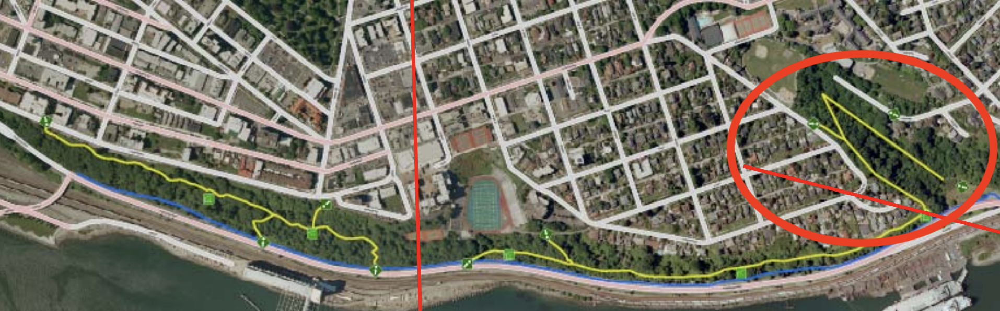
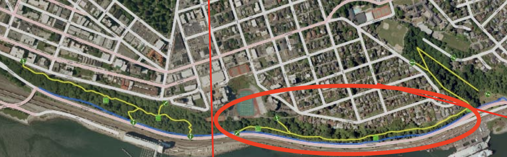
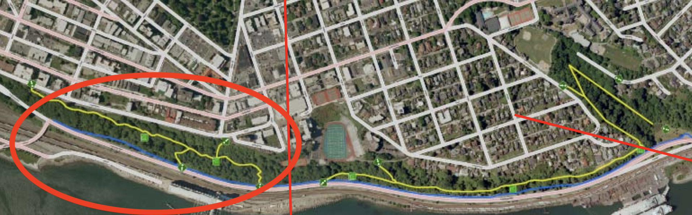

Advocacy
Garfield Gulch

The Garfield Gulch section of the trail is on Parks Tacoma land. It was reopened in 2023 and has been accessible since. This is great progress. However, there are ongoing challenges with maintaining that section of trail.
Parks Tacoma has contracted with WTA to improve the Garfield Gulch section. They’ve largely completed work. However, rather than finishing, WTA is using the trail as an in city training ground. This is ridiculous. Work should be completed so tax payers can enjoy the trail.
There are ongoing issues with homeless camps on the trail. Neither City of Tacoma nor Parks Tacoma have an effective strategy for removing camps. Campers linger for weeks, even months, after they are reported to 311 / Parks Tacoma. Without changes to city policy, homeless camps will remain a problem in Garfield Gulch and other parks in Tacoma.
There is no viable plan for maintenance of the trail. Parks Tacoma does not prioritize maintenance, preferring to spend money on other activities. Parks Tacoma has a volunteer program called CHIP-in! However that program focuses on make work activities such as removing ivy with hand tools. To keep the trails in good condition, it would be helpful for volunteers to be allowed to work.
To address the maintenance issue, we propose that a 501c3 called “Friends of Bayside Trails” be allowed by Parks Tacoma and City of Tacoma to do needed trail maintenance and garbage cleanup at no cost to the tax payer.
Railroad Grade

The Railroad Grade section of the trails connects the Garfield Gulch portion to Schuster Parkway and to the bottom of Stadium Bowl. This section was previously a railroad grade before it was converted to a section of the Bayside Trail in 1975. This section of trail is largely passable.
It is on City of Tacoma land. The city has closed it off. The trail was originally closed off in a misguided attempt to keep the homeless out. Since then, the city has realized that stance is untenable. So, the city now claims they closed the trail because of:
Landslide concerns
ADA access
Emergency access
All these things are lies. We would like public access to the trail restored. In conversations with the city organization managing this land, Environment Services, they have stated that trails are outside their remit. As such they will never reopen the trail. We believe the land should be allocated to Parks Tacoma. The trail could then be reopened with a simple policy change. From there a 501c3 called “Friends of Bayside Trails” could clear the trail and remove garbage. Access to this section of the trail could be restored at no cost to the tax payer.
Schuster Slope

The Schuster Slope section of the trail is the most challenging, both to hike and to restore. Washington Conservation Corps (WCC) routinely operates along it, planting trees. Homeless camps are ever present on this section of trail. This section is predominately single track. It is steep and even includes stairs. It’s an amazing place, all the more so because it is in the middle of our city.
Restoring the Schuster Slope section will require both a change in city policy to reopen the trail and repair work to fix the decades of neglect and in some cases outright vandalism of the trail by the city.
In addition to trail work there is a significant amount of garbage on this section. Shopping carts, tires, even televisions dumped by homeless camps and thieves litter the hillside. We’d like the city to grant volunteer crews the ability to clean up the garbage.
With the garbage removed, we’d like to work with groups such as WTA and WCC to fix the trails. Restored access would connect Schuster Parkway with 1 Stadium Way. There is another trailhead near the McMenamins Eks Temple. Wouldn’t it be great to walk from downtown to Old Town in the woods?
City Obligations to Provide Green Space
In 1975 the city built the Bayside Trails with funds from the state. Because of that, the city is obligated to provide ongoing access to the Bayside Trails. If the city does not, it must purchase a new park of equivalent value and provide access there.
The city seems to be in violation of this agreement.
We know all this from public records requests. We’ve captured those documents here.
It seems unlikely the city could purchase new land of equivalent value to the one of a kind Bayside Trails. This is some of the most beautiful trail in the city and perhaps the country. It is irreplacable. As such, to be in compliance, the city must reopen the trails.
Dome to Defiance
Rather than restoring the Bayside Trails, the city has a foolhardy plan to spend $105m on sidewalk along Schuster Parkway. That price has ballooned from the city’s earlier, and already ridiculous, figure of $49m. Spending money in this way is foolish — especially when the city is running a deficit, all the more so when the city already has an amazing trail that runs parallel to the proposed trail.
We believe plans for a multi million dollar sidewalk should be cancelled.